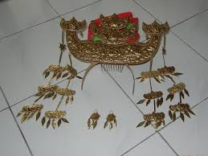
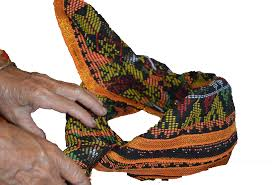
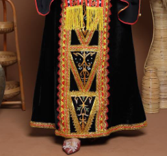
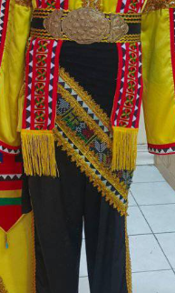

Bajau Samah_History

Cowboys Of The East
The Bajau Samah are the second largest indigenous group in Sabah, primarily settling along the west coast in districts like Kota Belud, Tuaran, and Papar. Unlike their nomadic seafaring cousins, the Bajau Samah are traditionally land-based farmers and skilled cattle breeders. Their history is defined by a transition from the sea to the plains, where they mastered the art of irrigation for rice cultivation and became renowned throughout Borneo for their exceptional equestrian abilities and vibrant festivals.

Equestrian Heritage
A defining chapter of Bajau Samah history is their legendary connection to horses. They are the only indigenous group in Sabah with a traditional horse-riding culture. Historically, they would decorate both themselves and their horses in elaborate, colorful costumes for grand processions and weddings. This "Cowboy" persona is more than just a skill; it is a symbol of bravery and social status that has been preserved through generations, making the Kota Belud Tamu (Sunday Market) a world-famous site for witnessing their equestrian heritage.Culturally, the Bajau Samah are known for their festive spirit and artistic flair, which is evident in their traditional crafts and architecture. Their history is deeply influenced by Islamic traditions, which merged with local customs to create a unique cultural identity. This is seen in their grand celebrations, where the Lepa-Lepa (traditional boat) motifs are often integrated into land-based decorations, and the sounds of the Kulintangan (a set of small gongs) fill the air, echoing a history of a people who are as comfortable on the saddle as they are near the shore.
[ MENS_ATTIRE ]
For men, the attire reflects their prestigious legacy as the "Cowboys of the East" and expert horsemen. Their outfit consists of a Badu Sampit (a long-sleeved shirt with gold trim) and matching Suar trousers, which are secured by a silver belt and a colorful woven waist sash called a Kandit. A vital component of the male silhouette is the Dastar, a hand-woven headcloth folded into a sharp peak to symbolize status and masculinity. Together, these elements create a striking visual identity that remains a centerpiece of Sabah’s cultural celebrations and wedding ceremonies.
[ WOMENS_ATTIRE ]
The Bajau Samah people of Sabah west coast possess a traditional wardrobe defined by its vibrant color palette, typically featuring bold reds, greens, and yellows that contrast with the black base of their garments. Women wear a sophisticated ensemble known as the Badu Sipak, a blouse distinguished by its unique split sleeves and metallic decorations, paired with an Olos Berangkit sarong that showcases a decorative vertical band. This look is elevated by the iconic Sarimpak, a grand, horn-shaped headpiece made of gold or silver, along with a himpogot silver coin belt and ornate brooches.
TRIBAL_ARCHIVE





